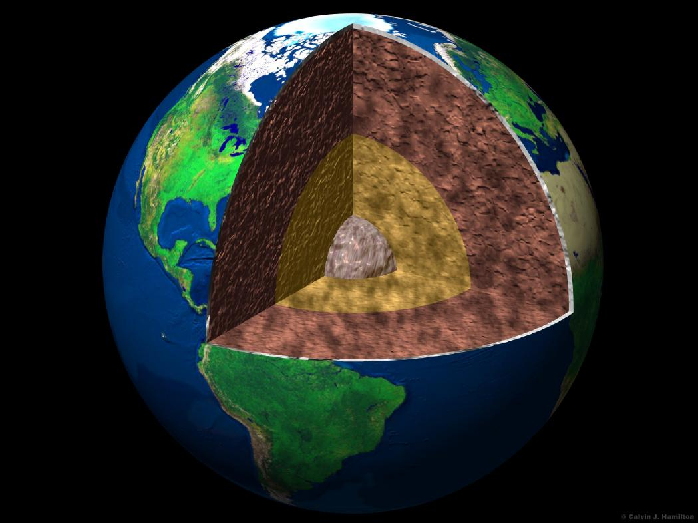
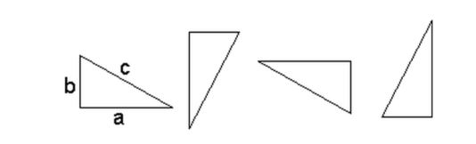

>
A Mole of Moles
How many times could a mole of moles dig tunnels to the center of the Earth and back?
The
average mole digs 20 inch deep tunnels throughout the ground to create a navigable tunnel system. This way, moles can hide from predators, such as hawks and snakes. In addition, they eat plants and animals found in and around their tunnels.
Step #1
The
distance from the center of the Earth to Earth's surface is about 6,378 kilometers or 3963 miles. 
First of all, let's convert miles to inches since it is given that each mole digs 20 inch tunnels. One miles is 5280 feet. One foot is 12 inches. 3963 Miles * 5280 feet * 12 inches = 251,095,680 inches. However, we must multiply this number by two because the moles are digging to the center and back. 251,095,680 * 2 = 502,191,360 inches. In conclusion, the distance from the surface of the Earth to the center is about 502,191,360 inches.
Step #2

Now
we find the amount of inches that a mole of moles will be able to dig. We will use Avogadro's number (6.02 * 10^23) and multiply it by 20, 20 being the amount of inches that each mole will dig. 6.02 * 10^23 * 20 = 1.204 * 10^25. Now we divide this number by the amount of inches it takes to go from the surface to the center and back, which is 502,191,360 inches. (1.204 * 10*25) / 502,191,360 = 2.397492462 * 10^16 times. Now we need to consider significant figures which rounds it off to 23970000000000000 times. If a mole of moles all dug holes 20 inches deep, they would be able to dig holes to the center of the earth 23970000000000000 times.